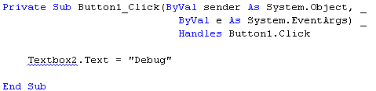
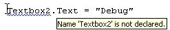
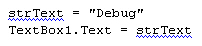
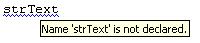
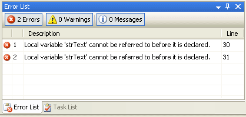

Design Time Errors in VB .NET
Design time errors, remember, are syntax errors. It's when VB .NET hasn't understood what you have typed. If that isn't clear, a few examples should explain it beter. So do the following:
- Create a new Windows project
- Add a button and textbox to your form
- Leave the Name properties on the defaults of Button1 and Textbox1
- Double click your button to access its code, and type the following:
Textbox2.Text = "Debug"
When you finish typing the line, VB.NET puts a blue wiggly line under Textbox2:

If you hold your mouse over Textbox2, you'll see a yellow tool tip appear, like the following:

The error is occurring because you don't have a textbox called Textbox2. You'll also see this same "Not declared" error if you try to set up a variable on the fly (which you were allowed to do in previous version of VB.) As an example, change your code to this:
strText = "Debug"
TextBox1.Text = strText
Here, we're trying to put the word "Debug" into a variable called strText. We then want to assign this variable to the Text property of Textbox1. However, VB.NET protests about this, and puts a wiggly line under all occurrences of strText:

Hold your mouse over the variable strText and you'll see the "not declared" tip again:

The problem this time is that we haven't declared the variable strText. Change the code to this:
Dim strText As String
strText = "Debug"
TextBox1.Text = strText
Now that we have declared a variable, the wiggly lines will go away. If we added the variable declaration in the wrong place, however, the wiggly lines would come back. Change you code to this:
strText = "Debug"
TextBox1.Text = strText
Dim strText As String
The wiggly lines will be back. That's because the declaration comes on the third line. When VB.NET meets the first two lines, it knows nothing about the strText variable.
If you have the Error List window open, you'll see a report of your error (If you can't see the Task List window, from the menu bars click View > Other Windows > ErrorList in version 2010, or just View > Error List in version 2012.):):

The description of the error is "Local variable 'strText' cannot be referred to before it is declared". If you double click the icons on the left, VB.NET will highlight the error in your code.
Move the Dim … Line back to the top, and not only do the blue wiggly lines go away, but the Task List will be erased.
Design-time errors like the one above can be quite straightforward to correct. Others can be quite difficult, and you'll see the blue wiggly line but not understand how to correct the error. The Task List should be your first port of call when faced with such an error.
In the next part, we'll take a look at Runtime errors.